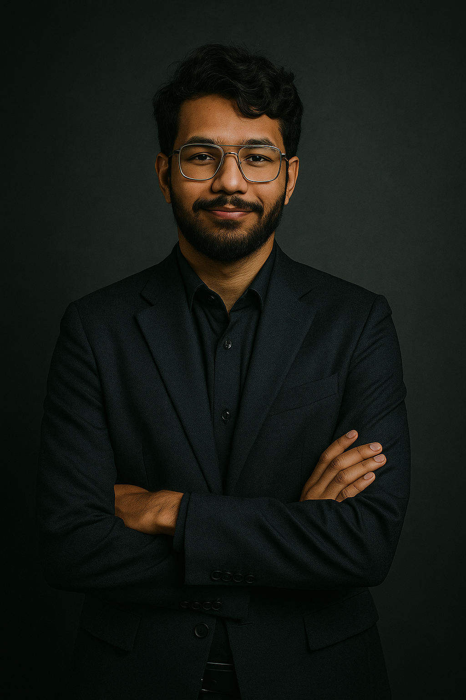

02 / THE HUMAN BEHIND THE CODECURIOSITY IS THE STARTING POINT

MA↗
MOHAMMAD ASHRAF ALIOMAN / UTC+4
A LITTLE ABOUT ME
Curious mind. Builder at heart.
I’m a software engineer based in Muscat, Oman, with a Bachelor of Applied Science in Information Technology from UTAS, Ibri (2025), specializing in Software Application Development.
At Ankaa Space and Technologies, I support enterprise IT systems, hardware and infrastructure across aviation, healthcare and industrial environments. My earlier product-team experience at Byanat connects technical delivery with business needs.
Enterprise IT deployment, hardware maintenance and technical support across civil aviation, healthcare and industrial organizations, including specialized aviation equipment, drones and helicopters.
IT infrastructureHardware supportSystem operations
EXPERIENCE
2026 FEB · APR
BYANAT
Business Analyst
Embedded in an agile product team, contributing to sprint planning, backlog grooming and user story delivery. Translated business requirements into actionable product tasks, with exposure to GTM strategy, product operating models, process improvement and technical documentation.